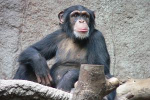

Společně s bonobem je nejbližším žijícím příbuzným člověka a je mu ze všech primátů nejpodobnější.Nejbližším příbuzným šimpanze učenlivého je bonobo, s nímž tvoří společný rod. Srst má tmavou, lysé části těla bývají u některých poddruhů světlé. Dorůstá obvykle výšky 65-95 cm (šimpanz čago kolem 120 cm) a hmotnosti od 44 do 75 kg. Přestože se převážně živí rostlinnou stravou, doplňuje svůj jídelníček o termity, mravence a jiný hmyz. V některých oblastech tvoří část jeho jídelníčku i maso získané lovem (malé antilopy, kočkodani a mláďata paviánů). Samice je březí osm měsíců, rodí jediné mládě. Pohlavně dospělý je po 6–10 letech života, je velmi chytrý. Odhaduje se, že oba druhy se oddělily zhruba před 0,8-1,8 miliony let.
Šimpanz učenlivý je intenzivně zkoumaným druhem, velmi zajímavé jsou např. kulturní odlišnosti jednotlivých tlup.

Zpět do menu